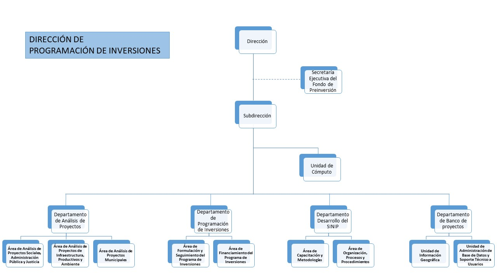

Misión y Visión
Misión
Promover la planificación, monitoreo y evaluación de la inversión pública no financieras, a través del Sistema Nacional de Inversión Pública, con el fin de contribuir al logro de los objetivos de desarrollo planteados en el plan de gobierno.
Visión
Ser una Dirección reconocida por su capacidad de generar información oportuna y de alta calidad para la toma de decisiones, promoviendo el desarrollo del personal, el manejo de la tecnología y la calidad del servicio.
Organigrama

Funciones
- Analizar y emitir dictamen técnico y recomendaciones de los proyectos o estudios básicos que solicitan financiamiento para su ejecución considerando el cumplimiento de los lineamientos de las estrategias y políticas de desarrollo del Gobierno y su viabilidad socioeconómica con respecto al área o sector al que pertenecen.
- Preparar el programa anual y plurianual de Preinversión e inversión pública, en coordinación con el Fondo de Preinversión y las instituciones del Sector Público de acuerdo a las normativas establecidas por el Sistema Nacional de Inversiones Públicas (SINIP), con el propósito de concretar las opciones de Preinversión e inversión más rentable y compatible con la política económica y social y las metas macroeconómicas del Gobierno.
- Realizar anualmente el seguimiento financiero y físico del programa de Preinversión e inversión, mediante el sistema de información del Sistema Nacional de Inversiones Públicas (SINIP) y la debida coordinación con las entidades ejecutoras, para mejorar la eficiencia en la ejecución presupuestaria.
- Coordinar los programas de capacitación del sector público y el desarrollo de metodologías en formulación y evaluación de proyectos, a fin de mejorar la calidad de la Preinversión pública.
- Mantener un inventario actualizado de los proyectos de inversión pública debidamente evaluados, dentro del sistema de información del Sistema Nacional de Inversiones Públicas (SINIP), para la preparación anual del programa de Preinversión Pública.
- Participar en la preparación y evaluación de programas y proyectos que se financien con recursos de los organismos bilaterales y multilaterales de crédito, así como el seguimiento de su ejecución, para garantizar su adecuada consideración dentro del programa anual y plurianual de inversiones públicas.
- Elaborar sobre la base de las políticas nacionales y sectoriales, una política anual de inversión pública, las metodologías, precios sociales, e indicadores de seguimiento para la gestión de las inversiones públicas.
- Coordinar las acciones a seguir para el planeamiento y gestión de la inversión pública nacional y controlar la formulación y evaluación de los proyectos de inversión a ser realizados junto al cumplimiento de las metodologías pautas y procedimientos establecidos.
- Establecer y mantener actualizado el sistema de información de programas y proyectos, el cual debe proporcionar información adecuada, oportuna y confiable sobre el comportamiento físico y financiero de los proyectos de inversión pública, que permitan el seguimiento de forma individual y agregada conforme a los planes establecidos por el Gobierno Nacional.
- Promover y auspiciar todo tipo de acciones para el apoyo informativo, técnico y de capacitación, acerca de los proyectos de inversión pública.
- Establecer y mantener los canales de comunicación entre el sector publico y privado, a fin de facilitar acuerdos que permitan identificar y apoyar los programas y proyectos de inversión.
- Informar trimestralmente al Órgano Ejecutivo de forma individual y agregada de la evaluación y seguimiento de los procesos de gestión de las inversiones.
- Administrar el Sistema Nacional de Inversión Públicas (SINIP).